安装Audiophile Linux - Get Start
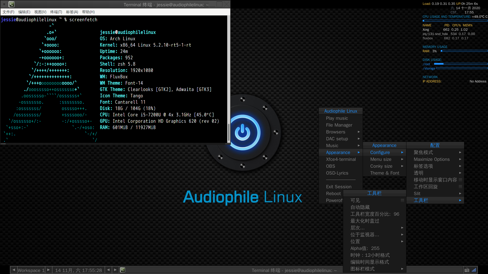
看看我用它听音乐的日常！
制作启动盘 - Grab APL
到官网下载镜像，制作启动盘。Grab your copy of new AP-Linux here.
- 要求-Requirements:
- 一个4G的U盘，用来刻录启动盘 - USB thumb drive to burn the iso file
- 一个至少25G的磁盘 - Blank disk or free partition on the disk. Use at least 25GB minimum.
- 有互联网 - Internet access
首先，将ISO文件刻录在U盘上。Windows可以用UltraISO，Linux可以用dd 命令：dd bs=4M if=[ISO文件路径] of=[U盘设备名] status=progress && sync 。注意：U盘内的所有文件都会被清除！谨慎操作！
Put/burn the iso on the thumb drive, power up your PC and select to boot from USB. Standard Arch Linux boot will appear. Just press enter and wait for system to boot. If you don’t know how to burn/put iso file on the USB thumb drive, there’s a lot of documentation on the internet. It all depends which operating system or software you use. But if you using Linux, it’s easy. In terminal just do this:
1 | dd bs=4M if=[/path/to/apl-v4.iso] of=[/dev/sdX] status=progress && sync |
where /dev/sdX is your thumb drive. Make sure you put correct /dev/sdX or you will loose all the data on that disk.
After boot finishes, use this commands:
如果你有4K的显示屏，启动后字体会很小，你应该运行setfont ter-232b
If you have 4K Monitor, the fonts will be very small. Execute this command if you have 4K Monitor:
1 |
上面讲的是在Linux下制作启动U盘，Windows中使用UltraISO[软碟通]也行。如果你习惯Windows系统，你最好在Disk Genius下把磁盘转为GPT，或者在Linux下的GNOME磁盘中左上角可以找到，或者……mklabel gpt
再或者：
1 | parted /dev/sdb |
Change your disk to GPT by typing parted 【Your device】
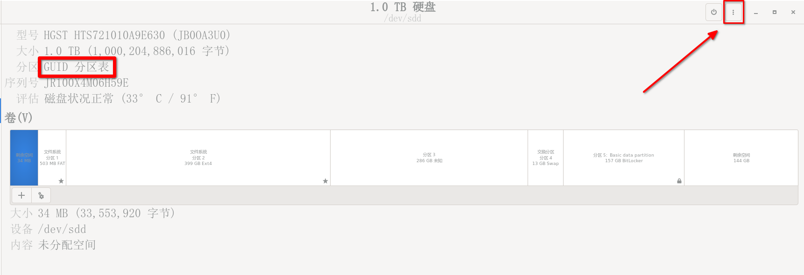
==下面我将在最后一个分区(134G)安装AP Linux==
在UEFI下启动安装盘并进行磁盘分区 - BOOT WITH UEFI & Create partitions
重启电脑(记得使用UEFI，不是Legacy)，选择制作的启动盘。Boot with UEFI.
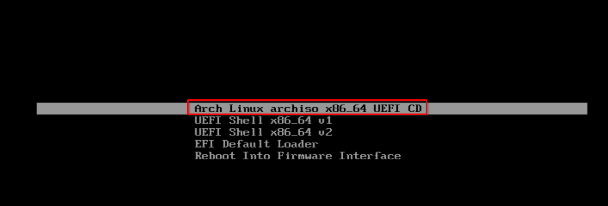
Now we’re logged in as root.
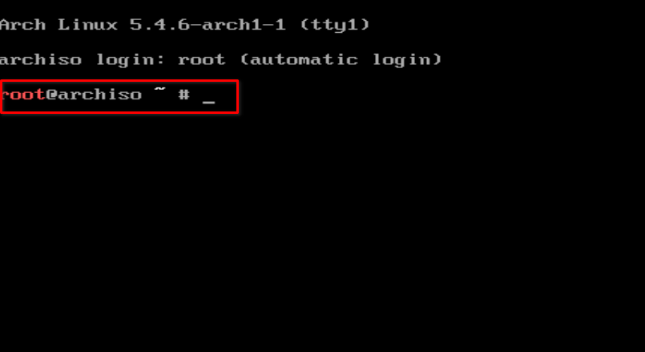
注:磁盘分区可以事先进行，不一定要等到这里，你可以在Windows下进行磁盘分区。
用fdisk -l查看当前磁盘，并用fdisk命令创建一个ESP分区（EFI分区，这里假设是/dev/sda1）和Linux分区(Ext4分区，这里假设/dev/sda2)还有Swap分区(/dev/sda3)，新手简易用cfdisk。下面你可以看到fdisk命令和blkid命令的执行结果。
To make a UEFI APL ,we need to divide the disk into three partitions——EFI ,EXT4 and Linux swap . cfdisk has a friendly interface.
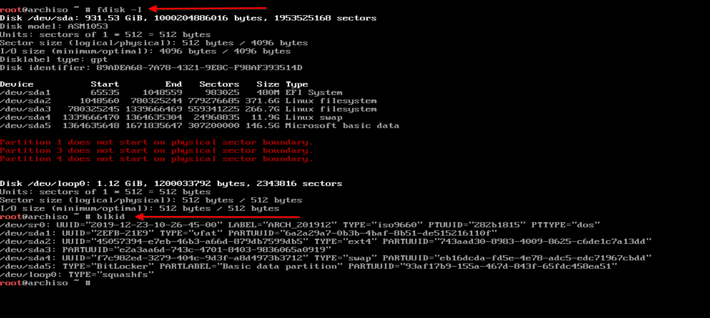
再来看看cfdisk命令：
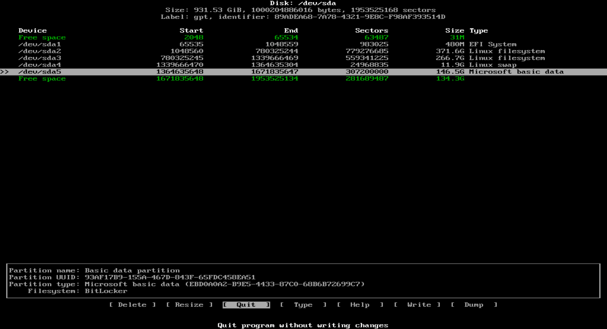
是不是有好很多了呢？老手用fdisk应该没啥问题，这里一笔带过：
Creating a partition with fdisk begins with typing “n” and then “p”. Saving with “w”. With cfdisk is different. Create new partition for AP-Linux and select “Write” to save new partition table. Quit to get back to the terminal.
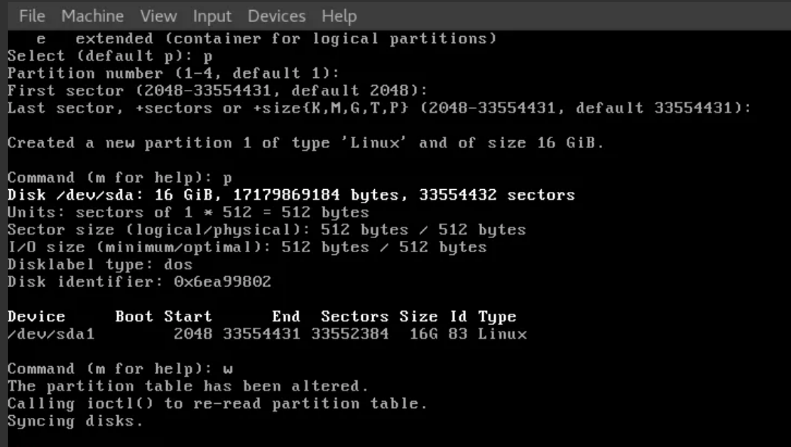
这里针对小白说下cfdisk：
首先，New一块ESP分区：
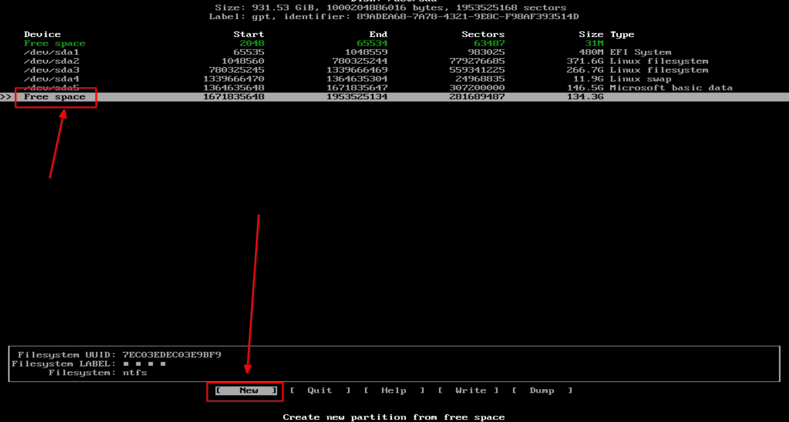
大小300M应该够了叭。。。
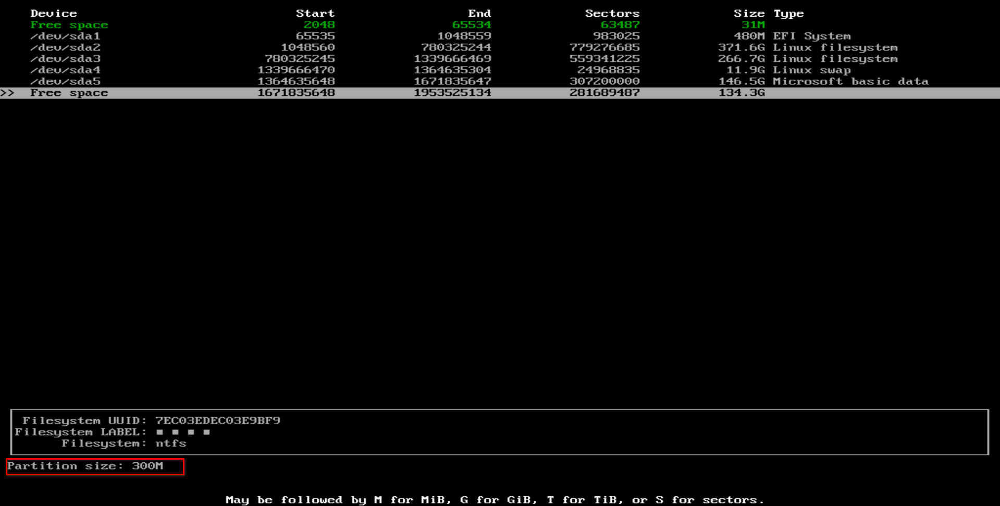
新建好后选择type，再选择EFI System
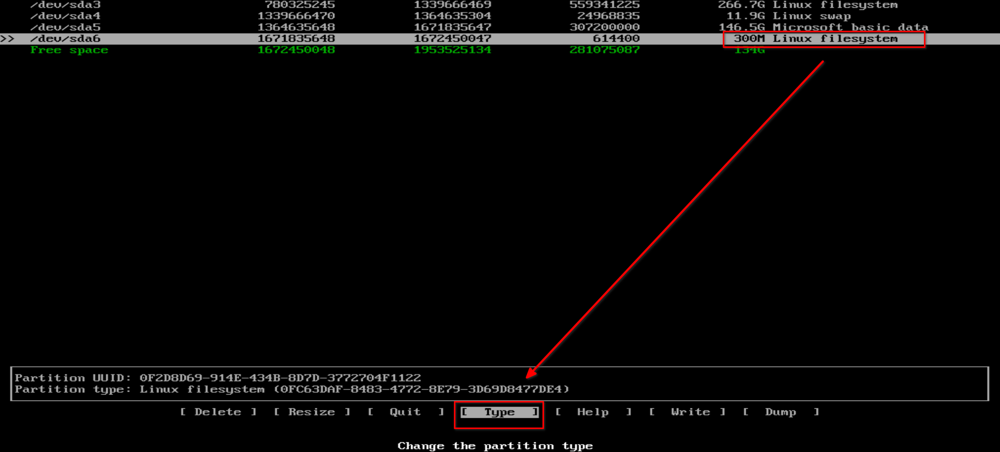
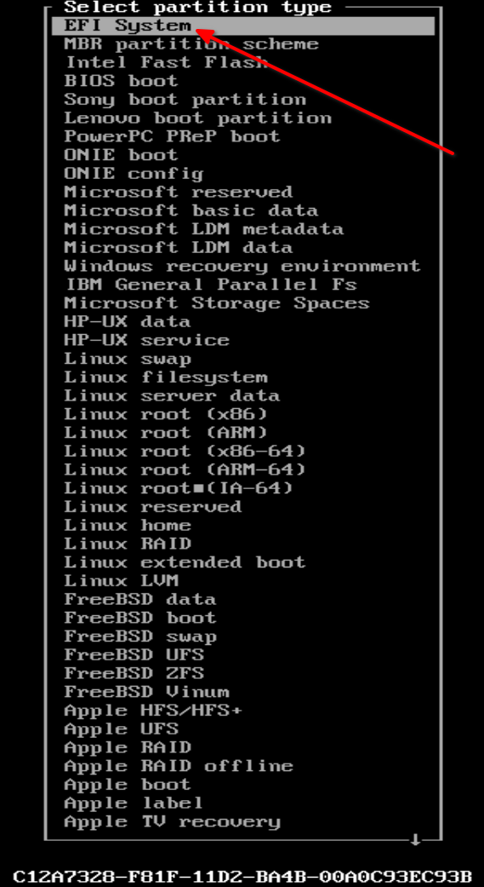
同理，按照相同的方法新建Linux filesystem和Linux Swap分区。
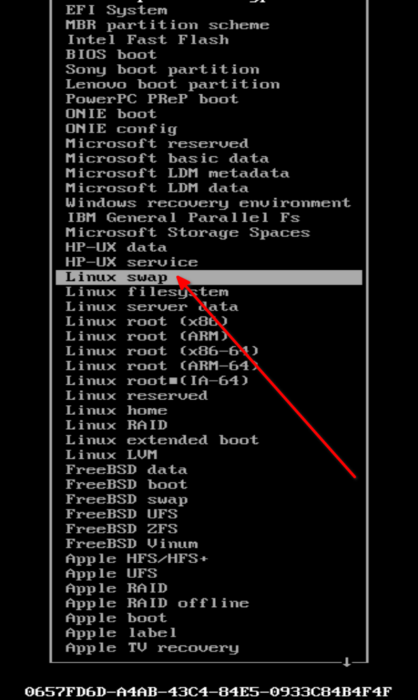
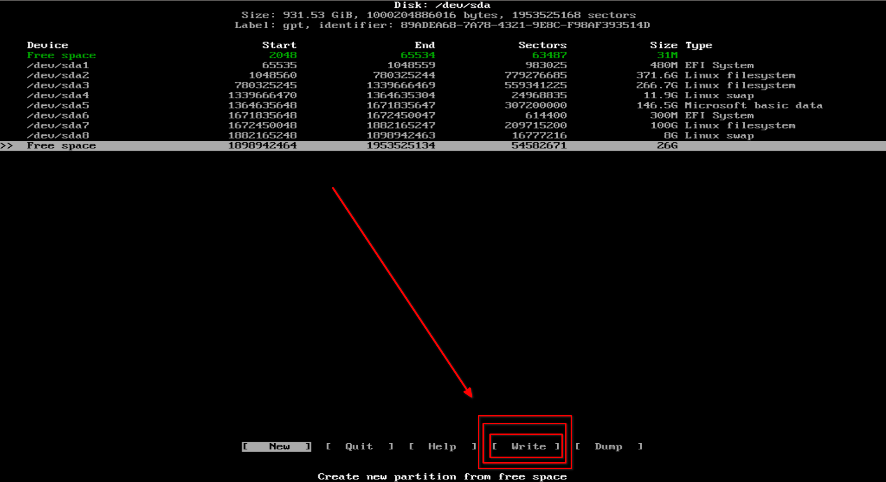
最后确认无误后点击write写入「==警告：一定要看清楚，数据无价！==」。
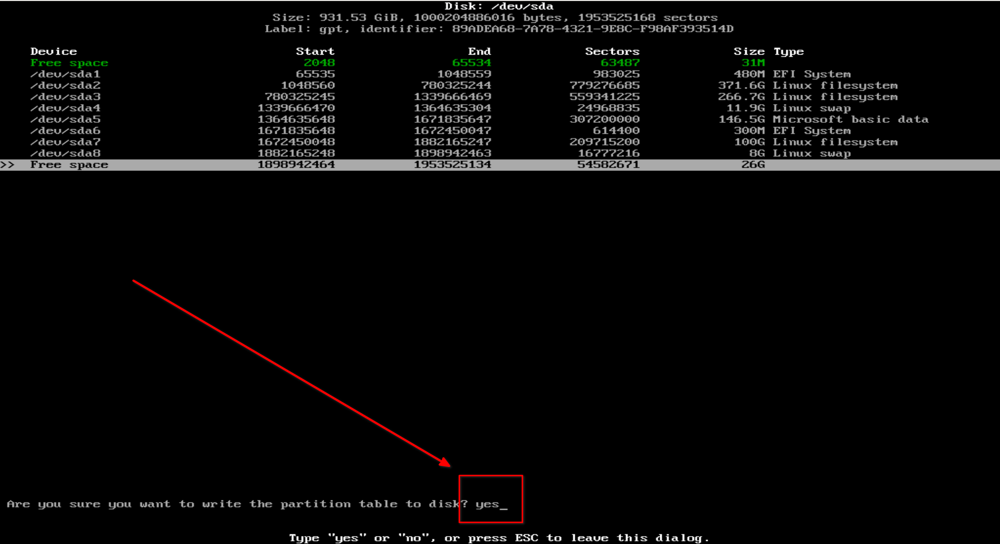
准备就绪，开始安装 - Install APL
创建好三个分区后 - Now we have 3 partitions:
- /dev/sda1:EFI分区 | 300M EFI Filesystem
- /dev/sda2:文件系统 | 100G EXT4 Filesystem
- /dev/sda3:交换空间 | 8G Linux Swap
-> 你可以不按照我这个来，这里仅作参考<还有sda1，sda2要根据你们实际的来，不是照抄，望周知！>
以下内容与ArchLinux安装不同，Arch Linux安装请参见 这里
格式化分区：
- 格式化sda1为vfat文件系统，用来存放efi文件，这样UEFI就可以从这里找到efi文件启动咱们的AP Linux：
mkfs.vfat -F32 /dev/sda1Format your EFI filesystem with fat32(vfat). - 格式化sda2为ext4，除非你另有需求，要使用其他文件系统。这里格式化为EXT4：
mkfs.ext4 /dev/sda2，然后顺便挂载分区到/mnt文件夹：mount /dev/sda2 /mnt- Create a EXT4 partition then mount it on/mntfolder . - 创建swap分区并启用：
mkswap /dev/sda3 && swapon /dev/sda3Create a swap partition for our APL .
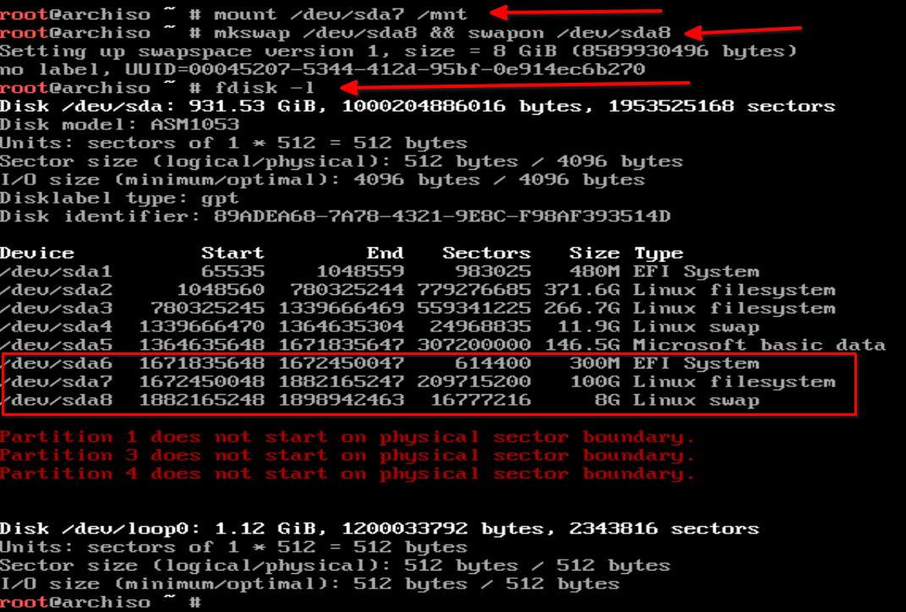
- 格式化sda1为vfat文件系统，用来存放efi文件，这样UEFI就可以从这里找到efi文件启动咱们的AP Linux：
查看分区
lsblk，然后执行time cp -ax / /mntCopy data to /dev/sda2.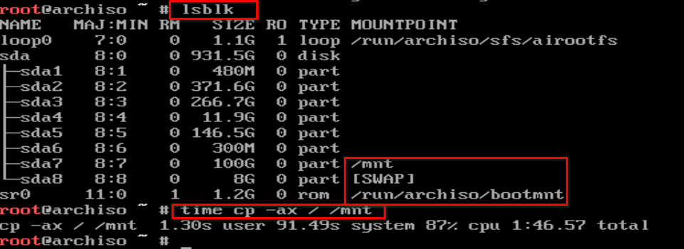
执行
arch-chroot /mnt /bin/bash切换到新系统，然后进入apl-files文件：cd /etc/apl-files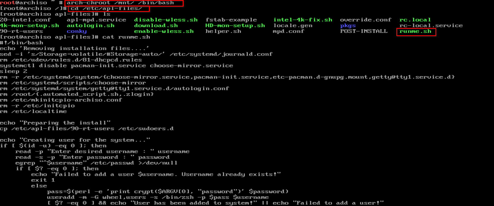
执行runme脚本：
./runme.sh中途会停下来让你输入用户名和密码，自己输入就是。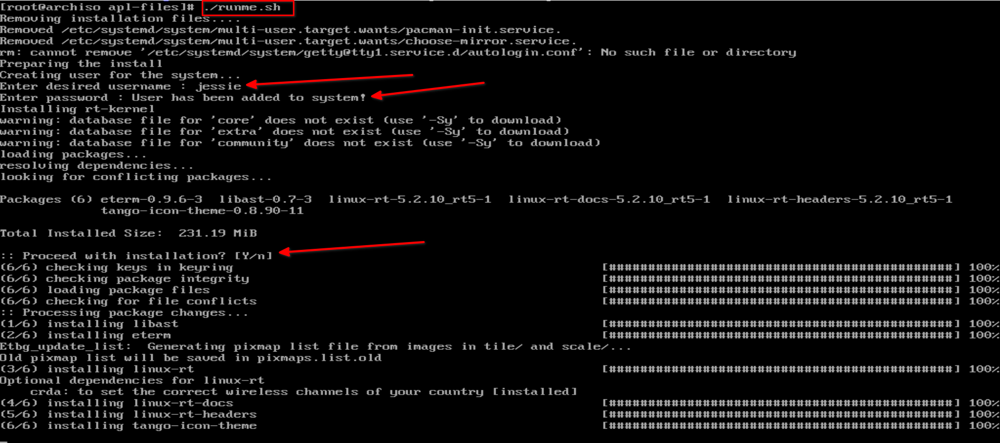
执行完会有提示说下一步你应该干嘛，但你要知道，这是针对Legacy Boot的指导，UEFI Boot该怎么做请继续往下看。Change root ,run install script in
/etc/apl-files.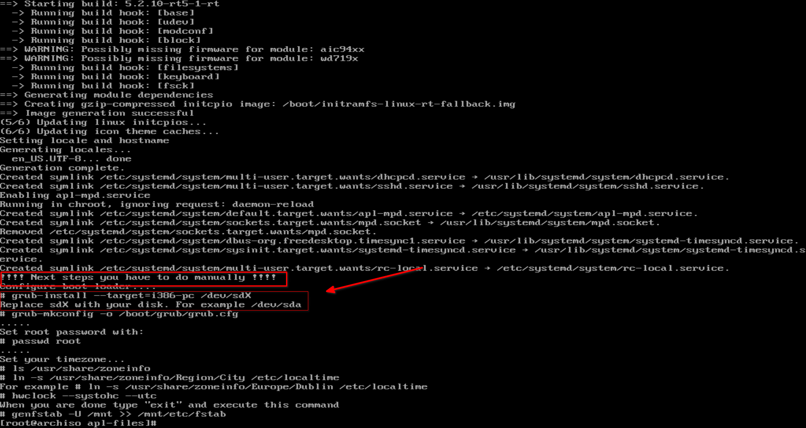
安装启动引导 - Grub-install x86_64-efi
Install grub for our ap-linux !
首先，进入/boot新建efi文件夹
mkdir efi挂载sda1:
mount /dev/sda1 /boot/efi/这里咱们使用的是UEFI，所以要执行 ：
grub-install --target=x86_64-efi --efi-directory=/boot/efi --bootloader-id=arch_grub --recheck --debug如果是Legacy启动，则是执行：
grub-install --target=i386-pc /dev/sda安装成功后执行：
grub-mkconfig -o /boot/grub/grub.cfg生成配置。
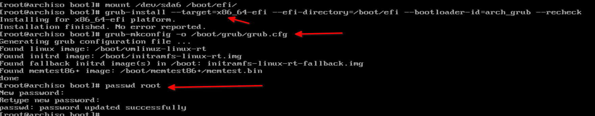
收尾工作 - Last step
差不多已经装完了，现在进行收尾 - The installation is nearly completed,Let’s finish it.
修改root用户密码：
passwd root调整时区：
ln -s /usr/share/zoneinfo/Hongkong /etc/localtime我这里用的是香港。修改硬件时间 ：
hwclock --systohc --utc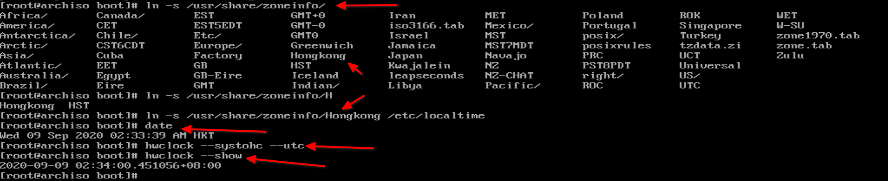
回到/etc/apl-files文件夹下执行你觉得有必要的脚本 - Enable wireless & autologin
./autologin.sh./enable-wless.sh
exit退出新系统，然后更新新系统的fstab - Finally , exit new system and generate a fstab file.genfstab -U /mnt >> /mnt/etc/fstab
然后你可以重启电脑了 - Reboot。
开机优化 - Power-on our APL & Make it easy to use
初始化pacman - Init pacman
首先检查网络
ping www.baidu.com管理员权限 - Be root：
su初始化pacman - Initialize pacman：
pacman-key --initpacman-key --populate archlinuxpacman -Sy
设置pacman源 - Set pacman mirror to TUNA：
cd /etc/pacman.dcp mirrorlist mirrorlist.bak- 将mirrorlist中第一行添加：
Server = https://mirrors.tuna.tsinghua.edu.cn/archlinux/$repo/os/$arch pacman -Sy
中文仓库见 这里 | 设置中文cn仓库 Arch Linux CN repo:
ArchlinuxCN 镜像使用帮助
Arch Linux 中文社区仓库 是由 Arch Linux 中文社区驱动的非官方用户仓库。包含中文用户常用软件、工具、字体/美化包等。
完整的包信息列表（包名称/架构/维护者/状态）请 点击这里 查看。
使用方法：在
/etc/pacman.conf文件末尾添加以下两行：1
2[archlinuxcn]
Server = https://mirrors.tuna.tsinghua.edu.cn/archlinuxcn/$arch
之后安装 archlinuxcn-keyring 包导入 GPG key。
pacman -S base-develgit clone https://aur.archlinux.org/yay.git && cd yay && makepkg -sipacman -S libffi glibc问题：错误：无法提交处理 (无效或已损坏的软件包)
1
2
3
4
5
6
7
8
9
10
111.首先更新一下密钥，如果没有安装archlinux-keyring 和 archlinuxcn-keyring,请及时安装
pacman -Sy archlinuxcn-keyring
pacman -Sy archlinux-keyring
sudo pacman-key --refresh-keys
2.重新加载相应的签名密钥
sudo pacman-key --init
sudo pacman-key --populate
3.清除pacman 的缓冲文件-不行再接下去
sudo pacman -Scc
4.更新或者安装系统即可
sudo pacman -Syu
设置语言 - Set up language：
1 | nano /etc/locale.gen |
找到en_US.UTF-8 UTF-8，zh_CN.UTF-8 UTF-8和zh_TW.UTF-8 UTF-8，把前面的注释#去掉
1 | # nano /etc/locale.conf |
关于硬盘 - HDD & SSD
1 | Now we need to do few more tweaks. If you have installed AP-Linux on SSD disk, edit /etc/fstab file with |
官方关于音乐设置 - About Audio Cards：
1 | Music play setup |
关于桌面Conky
使用wget下载conky-manager(我没用这个)：
wget --no-check-certificate https://github.com/teejee2008/conky-manager/releases/download/v2.4/conky-manager-v2.4-amd64.runchmod +x ./conky-manager-v2.4-amd64.runsudo ./conky-manager-v2.4-amd64.run终端：
conky-manager- /usr/share/doc/conky-XXXX-pre/里面有个convert.lua文件，转化旧版本配置用的。There is a lua script in folder
/usr/share/doc/conky-XXXX-pre/,it will convert old conkyrc file to a new one that compatible with new version.You should also convert file in~/.fluxbox/scripts/conkyto make items work in fluxbox menu.
conky-manager勾选yx_conky文件并进入该程序设置界面打开开机自启动
Conky配置文件 - New version of conkrc
大小：10
1
2
3
4
5
6
7
8
9
10
11
12
13
14
15
16
17
18
19
20
21
22
23
24
25
26
27
28
29
30
31
32
33
34
35
36
37
38
39
40
41
42
43
44
45
46
47
48
49
50
51
52
53
54
55
56
57
58
59
60
61
62
63
64
65
66
67
68
69
70
71
72
73
74
75
76
77
78
79
80
81
82
83
84
85
86
87
88
89
90
91
92
93
94
95
96
97
98
99
100
101
102
103
104
105
106
107
108
109
110
111
112
113
114
115
116
117
118
119
120
121conky.config = {
mpd_host = 'localhost',
mpd_port = 6600,
mpd_password = '1234',
-- maintain spacing between certain elements
use_spacer = 'none',
-- set to yes if you want tormo to be forked in the background
background = false,
use_xft = true,
font = 'xos4 Terminus:size=10',
--xftfont DejaVu Sans Mono:size=10
xftalpha = 0.8,
-- Update interval in seconds
update_interval = 3.0,
-- Create own window instead of using desktop (required in nautilus)
draw_shades = true,
default_shade_color = 'gray',
own_window = false,-- create a separate XWindow over the one from Xfdesktop
own_window_type = 'desktop',-- the window cannot be moved or resized
own_window_hints = 'undecorated,below,sticky,skip_taskbar,skip_pager',-- make it behave like it belongs to the desktop
own_window_argb_visual = true,-- true transparency, a compositor has to be active
own_window_argb_value = 100,-- make the background semi-transparent
double_buffer = true,-- avoid flickering
-- Draw outlines?
draw_outline = false,-- amplifies text
-- Draw borders around text
draw_borders = false,
--default_color red
-- Stippled borders?
stippled_borders = 0,
-- border margins
--window_border_inner_margin 3
--border_margin 9
-- border width
border_width = 1,
-- Use double buffering (reduces flicker, may not work for everyone)
double_buffer = true,
-- Minimum size of text area
--minimum_size 280 5
--maximum_width 280
maximum_width = 1350,
-- Default colors and also border colors, grey90 == #e5e5e5
default_color = 'grey90',
default_shade_color = 'black',
default_outline_color = 'DarkGrey',
-- Text alignment, other possible values are commented
--alignment top_left
--alignment top_right
alignment = 'top_right',
--alignment bottom_left
--alignment bottom_right
-- Gap between borders of screen and text
gap_x = 1,
gap_y = 5,
-- Subtract file system buffers from used memory?
no_buffers = true,
-- set to yes if you want all text to be in uppercase
uppercase = false,
-- stuff after 'TEXT' will be formatted on screen
};
conky.text = [[
${color #ffcb48}Load: $color$loadavg$color${color #ffcb48} UP:$color$uptime
${offset 110}${color slate grey}${time %a, }${color }${time %e %B %G}
${offset 110}${color slate grey}${time %Z, }${color }${time %H:%M}
${color 1793d0}CPU USAGE AND TEMPERATURE: ${color white}${execi 5 sensors | grep 'Core 0' | awk '{print $3}'} C
${color #1e90ff}$cpubar
#${cpugraph 25, 350 000000 6495ED}
${color #ffcb48}NAME PID CPU% MEM%
${color #e5e5e5}${top name 1}${top pid 1}${top cpu 1}${top mem 1}
${color #c4c4c4}${top name 2}${top pid 2}${top cpu 2}${top mem 2}
${color #a3a3a3}${top name 3}${top pid 3}${top cpu 3}${top mem 3}
${color 1793d0}MEMORY USAGE$color
${color #ffcb48}RAM${color #707070}:$color $memperc% ${color #1e90ff}${membar 6}${color}
#${color #ffcb48}SWAP${color #707070}:$color $swapperc% ${color #1e90ff}${swapbar 6}$color
${color 1793d0}DISK USAGE:
${color #1e90ff}/root ${color #1e90ff}${fs_bar /}
${color #1e90ff}/storage ${color #1e90ff}${fs_bar /storage}
${color 1793d0}NETWORK
${color #ffcb48}IP ADDRESS: ${color #e5e5e5} ${alignr}${addr eth0}
${color 1793d0}${if_mpd_playing}
${color FF6744}*MPD* $mpd_status
${color 1793d0}Artist: ${color #e5e5e5}${mpd_artist 25}
${color 1793d0}Album: ${color #c4c4c4}${mpd_album 25}
${color 1793d0}Title: ${color #a3a3a3}${mpd_title 25}
${color 1793d0}Length: ${color #e5e5e5}${mpd_length 15}
#${color 1793d0}Channels: ${color #e5e5e5}${mpd_channels}
#${color 1793d0}Samplerate: ${color #e5e5e5}${mpd_bits}/${mpd_samplerate} Hz
${color 1793d0}Format:${color #e5e5e5}${execi 3 /etc/apl-files/conky/format.sh | cut -d ":" -f 2}
${color 1793d0}Rate:${color #e5e5e5} ${execi 3 /etc/apl-files/conky/rate.sh | cut -d ":" -f 2}
${color 1793d0}Period size:${color #e5e5e5}${execi 3 /etc/apl-files/conky/period.sh | cut -d ":" -f 2}
${color 1793d0}Buffer size:${color #e5e5e5}${execi 3 /etc/apl-files/conky/buffer.sh | cut -d ":" -f 2}
${color #1e90ff}${mpd_bar}
${color 1793d0}Random: ${color #a3a3a3}${mpd_random} ${color 1793d0}Repeat: ${color #a3a3a3}${mpd_repeat}
$endif]];大小：20
1
2
3
4
5
6
7
8
9
10
11
12
13
14
15
16
17
18
19
20
21
22
23
24
25
26
27
28
29
30
31
32
33
34
35
36
37
38
39
40
41
42
43
44
45
46
47
48
49
50
51
52
53
54
55
56
57
58
59
60
61
62
63
64
65
66
67
68
69
70
71
72
73
74
75
76
77
78
79
80
81
82
83
84
85
86
87
88
89
90
91
92
93
94
95
96
97
98
99
100
101
102
103
104
105
106
107
108
109
110
111
112
113
114
115
116
117
118
119
120conky.config = {
mpd_host = 'localhost',
mpd_port = 6600,
mpd_password = '1234',
-- maintain spacing between certain elements
use_spacer = 'none',
-- set to yes if you want tormo to be forked in the background
background = false,
use_xft = true,
font = 'DejaVu Sans Mono:size=20',
xftalpha = 0.8,
-- Update interval in seconds
update_interval = 3.0,
-- Create own window instead of using desktop (required in nautilus)
draw_shades = true,
default_shade_color = 'gray',
own_window = false,-- create a separate XWindow over the one from Xfdesktop
own_window_type = 'desktop',-- the window cannot be moved or resized
own_window_hints = 'undecorated,below,sticky,skip_taskbar,skip_pager',-- make it behave like it belongs to the desktop
own_window_argb_visual = true,-- true transparency, a compositor has to be active
own_window_argb_value = 100,-- make the background semi-transparent
double_buffer = true,-- avoid flickering
-- Draw outlines?
draw_outline = false,-- amplifies text
-- Draw borders around text
draw_borders = false,
--default_color red
-- Stippled borders?
stippled_borders = 0,
-- border margins
--window_border_inner_margin 3
--border_margin 9
-- border width
border_width = 1,
-- Use double buffering (reduces flicker, may not work for everyone)
double_buffer = true,
-- Minimum size of text area
--minimum_size 280 5
--maximum_width 280
maximum_width = 1350,
-- Default colors and also border colors, grey90 == #e5e5e5
default_color = 'grey90',
default_shade_color = 'black',
default_outline_color = 'DarkGrey',
-- Text alignment, other possible values are commented
--alignment top_left
--alignment top_right
alignment = 'top_right',
--alignment bottom_left
--alignment bottom_right
-- Gap between borders of screen and text
gap_x = 1,
gap_y = 5,
-- Subtract file system buffers from used memory?
no_buffers = true,
-- set to yes if you want all text to be in uppercase
uppercase = false,
-- stuff after 'TEXT' will be formatted on screen
};
conky.text = [[
${color #ffcb48}Load: $color$loadavg$color${color #ffcb48} UP:$color$uptime
${offset 110}${color slate grey}${time %a, }${color }${time %e %B %G}
${offset 110}${color slate grey}${time %Z, }${color }${time %H:%M}
${color 1793d0}CPU USAGE AND TEMPERATURE: ${color white}${execi 5 sensors | grep 'Core 0' | awk '{print $3}'} C
${color #1e90ff}$cpubar
#${cpugraph 25, 350 000000 6495ED}
${color #ffcb48}NAME PID CPU% MEM%
${color #e5e5e5}${top name 1}${top pid 1}${top cpu 1}${top mem 1}
${color #c4c4c4}${top name 2}${top pid 2}${top cpu 2}${top mem 2}
${color #a3a3a3}${top name 3}${top pid 3}${top cpu 3}${top mem 3}
${color 1793d0}MEMORY USAGE$color
${color #ffcb48}RAM${color #707070}:$color $memperc% ${color #1e90ff}${membar 6}${color}
#${color #ffcb48}SWAP${color #707070}:$color $swapperc% ${color #1e90ff}${swapbar 6}$color
${color 1793d0}DISK USAGE:
${color #1e90ff}/root ${color #1e90ff}${fs_bar /}
${color #1e90ff}/storage ${color #1e90ff}${fs_bar /storage}
${color 1793d0}NETWORK
${color #ffcb48}IP ADDRESS: ${color #e5e5e5} ${alignr}${addr eth0}
${color 1793d0}${if_mpd_playing}
${color FF6744}*MPD* $mpd_status
${color 1793d0}Artist: ${color #e5e5e5}${mpd_artist 25}
${color 1793d0}Album: ${color #c4c4c4}${mpd_album 25}
${color 1793d0}Title: ${color #a3a3a3}${mpd_title 25}
${color 1793d0}Length: ${color #e5e5e5}${mpd_length 15}
#${color 1793d0}Channels: ${color #e5e5e5}${mpd_channels}
#${color 1793d0}Samplerate: ${color #e5e5e5}${mpd_bits}/${mpd_samplerate} Hz
${color 1793d0}Format:${color #e5e5e5}${execi 3 /etc/apl-files/conky/format.sh | cut -d ":" -f 2}
${color 1793d0}Rate:${color #e5e5e5} ${execi 3 /etc/apl-files/conky/rate.sh | cut -d ":" -f 2}
${color 1793d0}Period size:${color #e5e5e5}${execi 3 /etc/apl-files/conky/period.sh | cut -d ":" -f 2}
${color 1793d0}Buffer size:${color #e5e5e5}${execi 3 /etc/apl-files/conky/buffer.sh | cut -d ":" -f 2}
${color #1e90ff}${mpd_bar}
${color 1793d0}Random: ${color #a3a3a3}${mpd_random} ${color 1793d0}Repeat: ${color #a3a3a3}${mpd_repeat}
$endif]];如无法检测CPU温度
请安装lm-sensors
1
sudo pacman -Sy lm-sensors
- /usr/share/doc/conky-XXXX-pre/里面有个convert.lua文件，转化旧版本配置用的。There is a lua script in folder
Fluxbox - Make a few change
自动挂载音乐磁盘
编辑/etc/fstab（记得备份）
添加磁盘名，挂载点等信息：比如Thunar挂载点在/run/media/$USER/Disk_Label
1 | /dev/sdb1 /ssd-disk1 ext4 rw,noatime,discard,data=ordered 0 2 |
Conky
更新Conky配置文件。Convert conkyrc file to compatible with new version.
1 | 使用/usr/share/doc/conky-XXXX-pre/里面的convert.lua文件，将~/.fluxbox/scripts/conky中的conky脚本全部转化为新配置文件。这样fluxbox菜单中的Conky Size就可以用了。There is a lua script in folder `/usr/share/doc/conky-XXXX-pre/`,it will convert old conkyrc file to a new one that compatible with new version.You should also convert file in ~/.fluxbox/scripts/conky ，then the items in fluxbox —— conky size work well. |
添加菜单和快捷键 - Menu & Keys
自定义菜单和快捷键 - Setup Menu & Keys
Here are my menu & keys set, you can see annotations below.
~/.fluxbox/menu
1 | [] (Audiophile Linux) |
[exec] (Xfce4-terminal) {xfce4-terminal}： 我将终端更改成Xfce4-terminal。I change shell to xfce4-terminal, now you’ve see how to add items to fluxbox menu —— 【[Type] (Label) {Command}】.
~/.fluxbox/keys
1 | ! fluxbox-update_configs added '(workspace=[current])' to (Next|Prev)(Window|Group) |
Print :ExecCommand scrot:pacman -Sy scrotto install scrot ! Forat:【Key】 :【Function】
让Fcitx运行于Fluxbox wm
pacman -Syu && pacman -Sy fcitx-im fcitx-rime fcitx-configtool
在~/.pam_environment中添加[亲测好用,推荐]
1 | GTK_IM_MODULE DEFAULT=fcitx |
最后在~/.fluxbox/startup中在fluxbox启动之前添加 ： fcitx&
设置成Windows 10 的界面 - Make a Windows 10 Theme !
安装xfce4桌面
1 | pacman -Sy xfce4 xfce4-appfinder xfce4-cpugraph-plugin xfce4-eyes-plugin xfce4-mpc-plugin xfce4-power-manager xfce4-session xfce4-terminal xfce4-weather-plugin xfce4-artwork xfce4-datetime-plugin xfce4-fsguard-plugin xfce4-netload-plugin xfce4-pulseaudio-plugin xfce4-settings xfce4-time-out-plugin xfce4-whiskermenu-plugin xfce4-battery-plugin xfce4-dev-tools xfce4-genmon-plugin xfce4-notes-plugin xfce4-screensaver xfce4-smartbookmark-plugin xfce4-timer-plugin xfce4-xkb-plugin xfce4-clipman-plugin xfce4-dict xfce4-mailwatch-plugin xfce4-notifyd xfce4-screenshooter xfce4-systemload-plugin xfce4-verve-plugin xfce4-cpufreq-plugin xfce4-diskperf-plugin xfce4-mount-plugin xfce4-panel xfce4-sensors-plugin xfce4-taskmanager xfce4-wavelan-plugin xfce4-nitifyd |
安装支持软件：蓝牙、pulse audio python3 ag
1 | pacman -Sy bluez blueman feh pavucontrol fcitx-im fcitx-rime fcitx-configtool pulseaudio-bluetooth ristretto python-pip the_silver_searcher python3 timeshift cronie typora |
更改xfce4为win10主题：
1 | git clone https://github.com/SofianeHamlaoui/Go-undercover && cd Go-undercover |
在xfce4桌面下运行：
go-undercover
设置默认启动Xfce桌面请更改~/.xinit文件。如果你是从Fluxbox切换Xfce4，请先退出Fluxbox再使用startxfce4启动Xfce4桌面。
其他 - Others
pacman -Sy feh这是图片查看软件- 设置主机名 - Change hostname :
echo lh-name > /etc/hostname - 其他还有很多啊，什么
alsamixer,什么aplay -l……对了，OBS只能用PulseAudio。
问题
升级系统后出现initramfs: unpacking failed: invalid magic at start of compressed archive
参考：https://bbs.archlinux.org/viewtopic.php?id=252429
修改mkinitcpio.conf，取消COMPRESSION="lz4"注释。运行mkinitcpio -P
总结 - Command used
分好分区后:
sda1:EFI分区
sda2:ext4根分区
sda3:减缓分区
mount /dev/sda2 /mntmkswap /dev/sda3 && swapon /dev/sda3timw cp -ax / /mntarch-chroot /mnt /bin/bashcd /etc/apl-files./runme.shmkdir /boot/efi && mount /dev/sda1 /boot/efigrub-install --target=x86_64-efi --efi-directory=/boot/efi --bootloader-id=arch_linux --recheck --debuggrub-mkconfig -o /boot/grub/grub.cfgpasswd root./autologin.sh && ./enable-wlessln -s /usr/share/zoneinfo/Hongkong /etc/localtimehwclock --systohc --utcexitgenfstab -U /mnt >> /mnt/etc/fstabreboot
pacman-key --initpacman-key --populate archlinuxpacman -Sy火狐浏览器打开
mirrors.tuna.tsinghua.edu.cn自行修改arch镜像源，添加archlinuxcn。1
2
3
4
5
6
7
8
9添加ArhlinuxCN：在/etc/pacman.conf最后面添加：
[archlinuxcn]
Server = https://mirrors.tuna.tsinghua.edu.cn/archlinuxcn/$arch"
添加镜像源：
编辑 /etc/pacman.d/mirrorlist， 在文件的最顶端添加：
Server = https://mirrors.tuna.tsinghua.edu.cn/archlinux/$repo/os/$archpacman -Sy archlinux-keyring archlinuxcn-keyringpacman -Syunano /etc/locale.genecho 'LANG=zh_CN.UTF-8' > /etc/locale.confpacman -S wqy-zenheisudo locale-gen
pacman -Sy xfce4pacman -Sy xfce4-appfinder xfce4-cpugraph-plugin xfce4-eyes-plugin xfce4-mpc-plugin xfce4-power-manager xfce4-session xfce4-terminal xfce4-weather-plugin xfce4-artwork xfce4-datetime-plugin xfce4-fsguard-plugin xfce4-netload-plugin xfce4-pulseaudio-plugin xfce4-settings xfce4-time-out-plugin xfce4-whiskermenu-plugin xfce4-battery-plugin xfce4-dev-tools xfce4-genmon-plugin xfce4-notes-plugin xfce4-screensaver xfce4-smartbookmark-plugin xfce4-timer-plugin xfce4-xkb-plugin xfce4-clipman-plugin xfce4-dict xfce4-mailwatch-plugin xfce4-notifyd xfce4-screenshooter xfce4-systemload-plugin xfce4-verve-plugin xfce4-cpufreq-plugin xfce4-diskperf-plugin xfce4-mount-plugin xfce4-panel xfce4-sensors-plugin xfce4-taskmanager xfce4-wavelan-plugin xfce4-nitifydpacman -Sy bluez blueman feh pavucontrol fcitx-im fcitx-rime fcitx-configtool pulseaudio-bluetooth ristretto python-pip the_silver_searcher python3 timeshift cronie typora修改主题
1
2
3
4
5
6# 更改xfce4为win10主题：
git clone https://github.com/SofianeHamlaoui/Go-undercover && cd Go-undercover
sudo chmod +x ./install.sh
sudo ./install.sh
# 在xfce4桌面下运行：
go-undercover截屏 - Screenshots
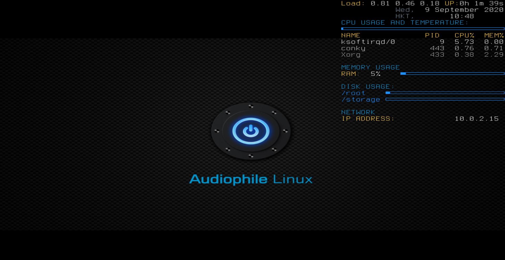
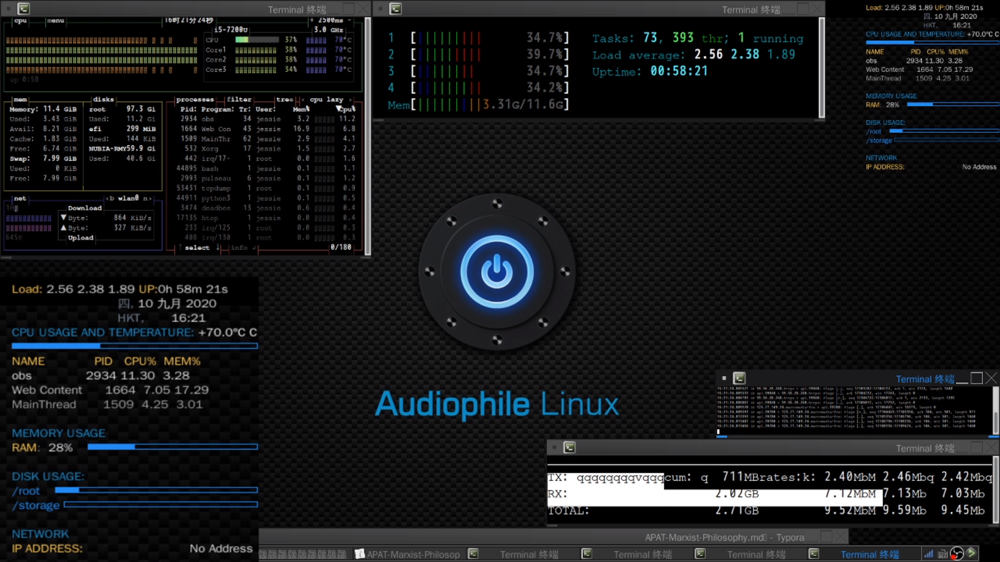
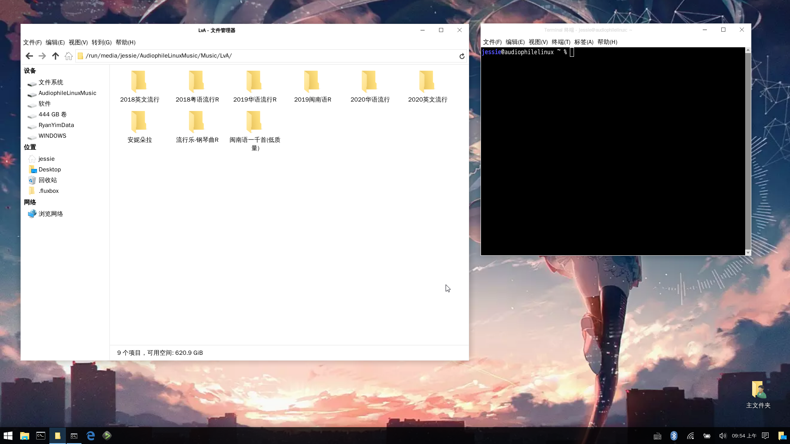
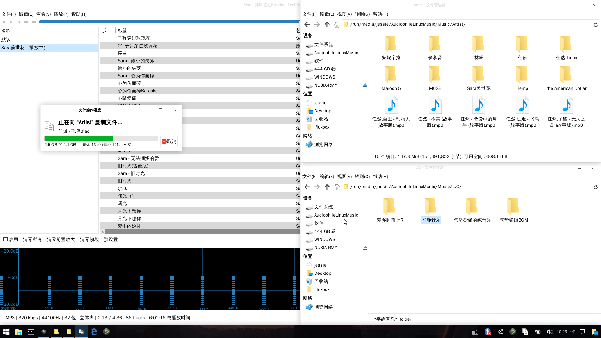
安装记录（没有讲解！）：
If you like this blog or find it useful for you, you are welcome to comment on it. You are also welcome to share this blog, so that more people can participate in it. If the images used in the blog infringe your copyright, please contact the author to delete them. Thank you !